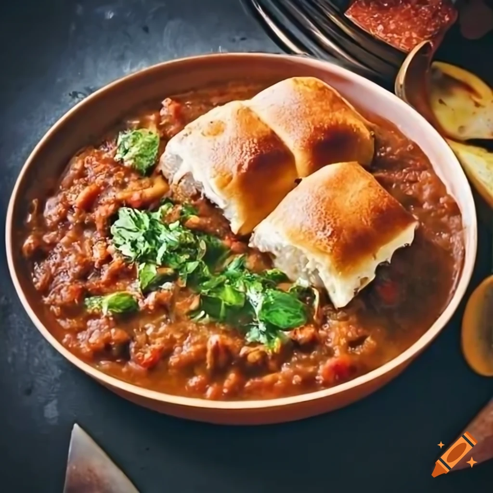

Pav Bhaji

What is Pav Bhaji?
Pav Bhaji is a popular Indian curry dish that originated in the state of Maharashtra. It consists of a flavorful and spicy vegetable curry, known as bhaji, served with soft bread rolls called pav. The bhaji is made by cooking a medley of vegetables like potatoes, tomatoes, peas, onions, and capsicum, along with a blend of aromatic spices. The vegetables are mashed together to create a thick and luscious curry. Pav Bhaji is typically garnished with fresh coriander, a squeeze of lemon juice, and a dollop of butter. It is enjoyed as a street food snack or as a main course dish. The combination of the rich and tangy curry with the soft and buttery pav rolls makes Pav Bhaji a delightful and satisfying meal.
Ingredients
- 2 tablespoons oil
- 1 large onion, grated
- 3/4 teaspoon salt, or as needed
- 5 cloves garlic, grated
- 2 cups water, or more as needed
- 2 teaspoons pav bhaji masala
- 1 diced tomatoe
- 2 small potatoes, peeled and cut into small cubes
- 1 teaspoon mild chili powder
- 1 teaspoon ground coriander
- 1 pinch ground ginger
- 1/2
teaspoon lemon juice
- 1 tablespoon unsalted butter, or more to taste
Steps to Cook
- Heat 1 tablespoon oil in a saucepan over medium heat. Add onion and 1/4 teaspoon salt; fry until browned, 5 to 8 minutes. Add garlic; cook and stir for 4 minutes. Pour in 1 cup water. Add 1 teaspoon pav bhaji masala and 1/2 teaspoon salt. Bring to a boil. Reduce heat and simmer until flavors combine, about 10 minutes.
- Add tomatoes, potatoes, and corn to the saucepan. Season with chile powder, coriander, and ginger. Bring to a boil. Reduce heat and simmer for 15 minutes. Mash curry gently with the back of a wooden spoon or spatula. Simmer for 10 minutes more. Taste and adjust salt. Add 1/2 teaspoon pav bhaji masala and lemon juice. Mash slightly again.
- Add 1/4 to 1/2 cup water to give curry a runny consistency. Add remaining 1 tablespoon oil and butter; stir until butter is melted. Divide into serving bowls and sprinkle remaining pav bhaji masala on top.